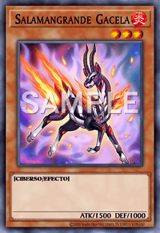
Salamangrande Gacela 3 copia(s) · CID 14240Galería completa del inventario documentado
Imágenes auténticas recuperadas de Konami Neuron o del archivo original, enlazadas por identificador oficial CID. Las cartas no documentadas físicamente no se añaden.
Main · 21 identidades
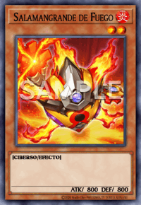
Salamangrande de Fuego 3 copia(s) · CID 18908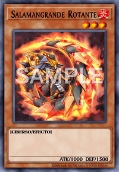
Salamangrande Rotante 2 copia(s) · CID 14241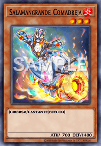
Salamangrande Comadreja 1 copia(s) · CID 18909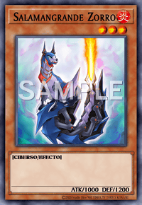
Salamangrande Zorro 1 copia(s) · CID 13890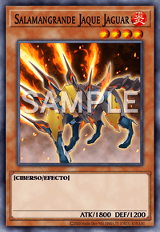
Salamangrande Jaque Jaguar 1 copia(s) · CID 13892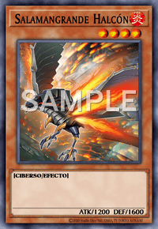
Salamangrande Halcón 1 copia(s) · CID 13891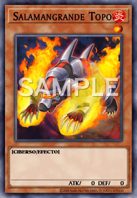
Salamangrande Topo 1 copia(s) · CID 14239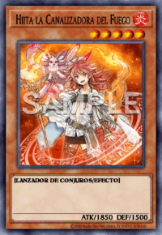
Hiita la Canalizadora del Fuego 1 copia(s) · CID 18813 Flor de Ceniza & Primavera Feliz
3 copia(s) · CID 12950
Flor de Ceniza & Primavera Feliz
3 copia(s) · CID 12950 El Bufón y el Pájaro del Candado
3 copia(s) · CID 9279
El Bufón y el Pájaro del Candado
3 copia(s) · CID 9279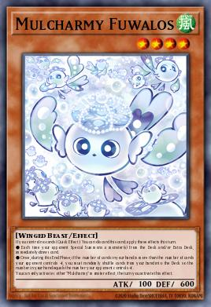
Fuwalos Multivadora 3 copia(s) · CID 20500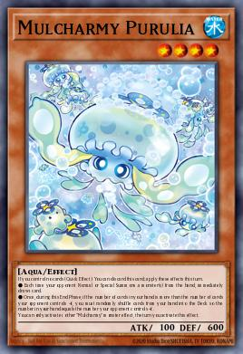
Purulia Multivadora 1 copia(s) · CID 20206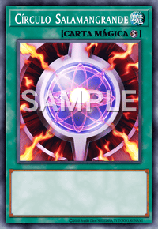
Círculo Salamangrande 3 copia(s) · CID 14244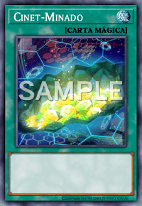
Cinet-Minado 3 copia(s) · CID 14301 Gobernante Oscuro No Más
3 copia(s) · CID 14742
Gobernante Oscuro No Más
3 copia(s) · CID 14742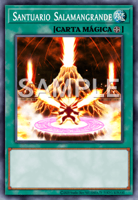
Santuario Salamangrande 1 copia(s) · CID 13938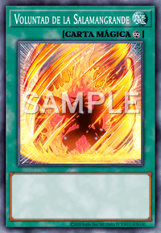
Voluntad de la Salamangrande 1 copia(s) · CID 13940 Llamado por la Tumba
1 copia(s) · CID 13619
Llamado por la Tumba
1 copia(s) · CID 13619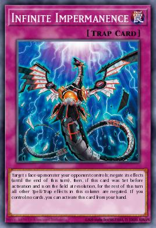
Infinito Temporal 3 copia(s) · CID 13631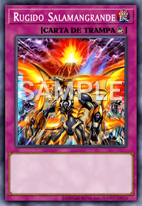
Rugido Salamangrande 1 copia(s) · CID 14247Extra · 10 identidades
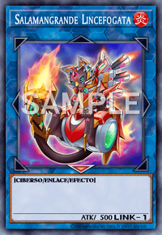
Salamangrande Lincefogata 3 copia(s) · CID 14249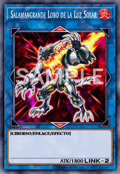
Salamangrande Lobo de la Luz Solar 2 copia(s) · CID 14125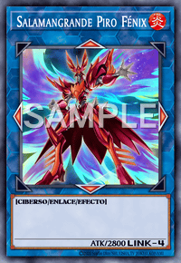
Salamangrande Piro Fénix 2 copia(s) · CID 14666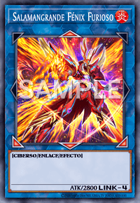
Salamangrande Fénix Furioso 2 copia(s) · CID 18912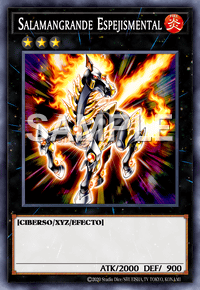
Salamangrande EspejismetalOficial: Salamangrande Espejismental 1 copia(s) · CID 14248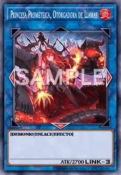
Princesa Prometeica, Otorgadora de Llamas 1 copia(s) · CID 19507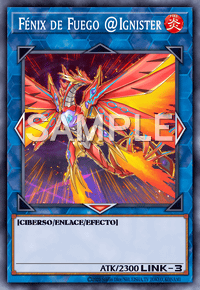
Fénix de Fuego @Ignister 1 copia(s) · CID 14855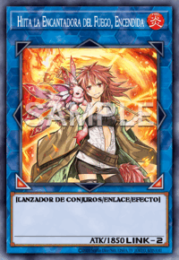
Hiita la Encantadora del Fuego, Encendida 1 copia(s) · CID 14133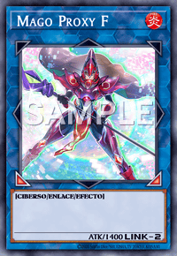
Mago Proxy F 1 copia(s) · CID 15033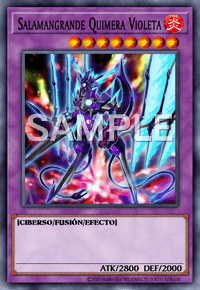
Salamangrande Quimera Violeta 1 copia(s) · CID 14111Side · 8 identidades
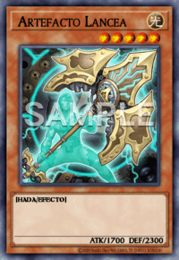
Artefacto Lancea 3 copia(s) · CID 11243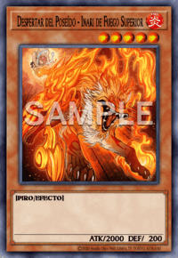
Despertar del Poseído - Inari de Fuego Superior 1 copia(s) · CID 15406 Tormenta de Relámpagos
2 copia(s) · CID 14876
Tormenta de Relámpagos
2 copia(s) · CID 14876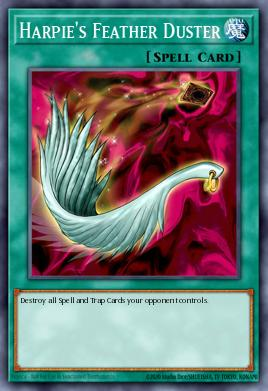
Polvo de Pluma de Arpía 1 copia(s) · CID 4678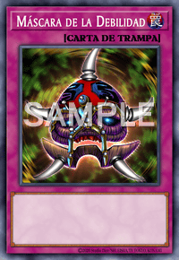
Máscara de la Debilidad 3 copia(s) · CID 5102 Pelea Pareja
3 copia(s) · CID 13293
Pelea Pareja
3 copia(s) · CID 13293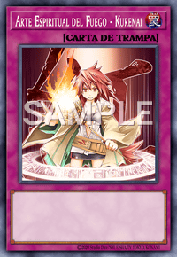
Arte Espiritual del Fuego - Kurenai 1 copia(s) · CID 6441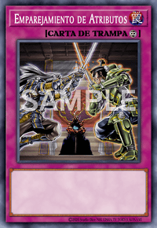
Emparejamiento de Atributos 1 copia(s) · CID 7934Decisiones tácticas de este deck · V40
Estudia una situación de rival, luego abre las rutas ilustradas A09. No son resultados de simulador ni sustituyen las condiciones de la carta.
Probabilidades exactas de mano de cinco
- ≥1 Gacela o de Fuego: 57.71% de coincidencia; resolución del efecto no garantizada.
- ≥1 Gacela/de Fuego/Círculo/Cinet: 85.06% de coincidencia; resolución del efecto no garantizada.
- de Fuego Y Círculo: 9.80% de coincidencia; resolución del efecto no garantizada.
- Gacela Y Rotante: 6.81% de coincidencia; resolución del efecto no garantizada.
- ≥1 Círculo o Cinet: 57.71% de coincidencia; resolución del efecto no garantizada.
- ≥1 Gobernante Oscuro No Más: 33.76% de coincidencia; resolución del efecto no garantizada.
- ≥1 Infinito Temporal: 33.76% de coincidencia; resolución del efecto no garantizada.
- Evaluar carta disponible, materiales, coste, zona y ventana; no asumir resolución sin respuesta del rival.
Combo rival que busca mucho
Si empiezas: Círculo/Cinet buscan motor; preferir Gacela o de Fuego por mano.
Si vas segundo: Usar handtraps antes de consumir recursos de acceso del Deck.
Side físico: Droll ×3, Ash ×3 y Fuwalos ×3 son cartas del Main; sus ventanas difieren.
Riesgo: Lincefogata y Gacela pueden activar en la misma secuencia; Droll tras primera adición frena siguientes.
Monstruos grandes / negación
Si empiezas: Reencarnar Lobo para recuperar y preparar recursos M/T.
Si vas segundo: Gobernante Oscuro ×3 neutraliza efectos rivales pero prohíbe daño; no OTK ese turno.
Side físico: Pelea Pareja ×3 Side si se llega a Battle.
Riesgo: Tras Dark Ruler controlar supervivencia y no confundir ventaja con victoria inmediata.
Backrow pesado
Si empiezas: Preparar Rugido si existe acceso y Link Salamangrande.
Si vas segundo: Tormenta de Relámpagos ×2 y Polvo de Pluma ×1 Side; entrar con 1:1.
Side físico: Tormenta ×2 + Polvo ×1, Side completo.
Riesgo: Tormenta requiere no controlar cartas boca arriba al activarse; contra backrow elegir modo M/T.
Rival destierra recursos
Si empiezas: Hacer Link y mantener Jaguar/Zorro reutilizables; no prometer infinitos revivals.
Si vas segundo: Lancea ×3 Side para cortar destierro durante turno rival si formato y ventana permiten.
Side físico: Lancea ×3 Side.
Riesgo: Si Rotante se Invocó del GY, el destino al dejar campo depende de su condición.
Mirror FUEGO / usar Cementerio rival
Si empiezas: Hiita Link permite extender con FUEGO rival del GY si está disponible.
Si vas segundo: Princesa Prometeica exige monstruos FUEGO mientras esté en Campo.
Side físico: Inari de Fuego Superior ×1 es tech, no pieza genérica de combo.
Riesgo: No invocar no-FUEGO después del lock de Salamangrande de Fuego.
Juego tardío tras perder Santuario
Si empiezas: Lobo en GY puede ser reciclado por Jaguar si están las condiciones.
Si vas segundo: Sin Santuario, no reencarnar de forma alternativa usando un Link homónimo como único material.
Evaluar carta disponible, materiales, coste, zona y ventana; no asumir resolución sin respuesta del rival.
Riesgo: Fénix Furioso busca únicamente cuando se usa otro Fénix Furioso como material.
Evaluar carta disponible, materiales, coste, zona y ventana; no asumir resolución sin respuesta del rival.
Guías visuales: rutas y variantes A09
Paneles por paso con imágenes originales por CID. Cada bloque es un apoyo didáctico al texto técnico completo del A09, no un replay; se respetan condiciones, materiales, límites, y las rutas no ejecutables están señaladas.
S-C01 · Gacela → Espejismetal → Lobo reencarnado», complejidad media
COMBOPunto de control: El primer Lobo llega al GY al reencarnar; Jaguar solo revive donde apunte el segundo Lobo.
Antes de jugar: Gacela Normal; Rotante en Deck; Jaguar en Deck; 2 Lobos y Santuario disponibles.
Regla: Gacela manda Rotante, ambos son Nivel3 para Espejismetal; Espejismetal bloquea efectos de monstruos no FUEGO; Jaguar revivido a flecha del segundo Lobo.
Si falla: Si niegan envío Gacela, no afirmar Rotante; si se ocupa la flecha del Lobo, no recuperar Gacela.
Konami: CID 14240 · CID 14248 · CID 14125 · Sin replay de simulador
Paso 01
Normal Gacela. Activa su efecto y envía Rotante del Deck al Cementerio.
Paso 02
Controlas Gacela: activa el efecto de Rotante en GY e Invócalo Especial.
Paso 03
Superpón Gacela Nivel3 + Rotante Nivel3 para invocar Espejismetal Rango3.
Paso 04
Desacopla un material (por ejemplo Rotante); Invoca Jaque Jaguar del Deck en Defensa. Desde ahora, este turno solo activa efectos de monstruos FUEGO.
Paso 05
Usa Jaque Jaguar (Cyberse Nivel4) para Link Invocar Lincefogata; busca Santuario desde Deck si la carta sigue allí y no te niegan.
Paso 06
Activa Santuario. Usa Espejismetal + Lincefogata como materiales FUEGO para Link Invocar el primer Lobo de la Luz Solar. Si hubiera un monstruo válido del rival, Espejismetal podría activar su retorno a mano cuando se envía como material; en turno1 vacío no hay ese objetivo.
Paso 07
Usa el Lobo como material completo y Link Invoca el segundo Lobo por Santuario (reencarnación homónima).
Paso 08
En GY, Jaque Jaguar selecciona el primer Lobo del GY, lo devuelve al Extra y se Invoca a una zona a la que apunte el segundo Lobo. Esto puede disparar a Lobo para añadir Gacela de tu GY a mano, si terminó allí y la zona/efecto son correctos.
Situación hipotética descrita en A09; la cadena aún no fue ensayada en simulador.
S-C02 · de Fuego → búsqueda Gacela → Espejismetal», complejidad media
COMBOPunto de control: Después del efecto de de Fuego, todas las especiales del turno deben ser FUEGO.
Antes de jugar: Salamangrande de Fuego Normal; Gacela y Rotante en Deck; Espejismetal en Extra.
Regla: De Fuego restringe futuras Especiales a FUEGO; Lincefogata provoca condición de Gacela en mano; luego 2 Nivel3.
Si falla: Si no queda Gacela para buscar o el Link1 no se envía al GY, no presuponer Gacela Especial.
Paso 01
Normal de Fuego, activa y busca Gacela Nivel3 del Deck (suponiendo que aún esté ahí).
Paso 02
En resto del turno solo podrás Invocar Especial FUEGO.
Paso 03
Usa de Fuego para Link Invocar Lincefogata; se ha enviado otro Salamangrande al GY.
Paso 04
Activa el efecto de Gacela en mano en ventana legal para Invocarla Especial. En cadena/tras resolución, Lincefogata puede buscar Santuario si no fue negado.
Paso 05
Con Gacela invocada, envía Rotante del Deck a GY; revívelo porque controlas Gacela.
Paso 06
Invoca Espejismetal Rango3 usando los dos Nivel3; ahora tienes Balelynx y Espejismetal. Decide si inviertes la Xyz para extender o conservas recursos.
Situación hipotética descrita en A09; la cadena aún no fue ensayada en simulador.
S-C03 · Jaque Jaguar devuelve recurso y reactiva Lobo», complejidad media
RECUPERACION_CONDICIONALPunto de control: VARIANTE de recuperación con campo previo; no starter de una carta.
Antes de jugar: Jaque Jaguar en GY; Lobo en Campo con flecha libre y Salamangrande en GY para reciclar.
Regla: Jaguar debe Invocarse exactamente a una zona apuntada por Lobo para disparar la recuperación de un monstruo FUEGO.
Si falla: Tras añadir un nombre con Lobo, no se puede invocar ese mismo nombre durante el resto del turno.
Konami: CID 14125 · Sin replay de simulador
Paso 01
Selecciona con Jaque Jaguar en GY un monstruo Salamangrande disponible en GY y barájalo al Deck/Extra conforme a tipo.
Paso 02
Invoca a Jaque Jaguar del GY a una zona que apunte Lobo.
Paso 03
Si el efecto de Lobo está disponible y ocurrió invocación a su zona, selecciona y añade un monstruo FUEGO del GY a mano.
Paso 04
Mantén Jaque como material potencial del siguiente Link, si su estado lo permite.
Situación hipotética descrita en A09; la cadena aún no fue ensayada en simulador.
S-C04 · Fénix Furioso con búsqueda REAL», complejidad alta y estado PRECONDICIONAL
TRANSFORMACION_DE_TABLEROPunto de control: TRANSFORMACIÓN: exige primer Fénix Furioso y Santuario existentes; Rugido buscado no activable como recién colocado.
Antes de jugar: Primer Fénix Furioso Link4 en campo, Santuario activo, segundo Fénix Furioso en Extra.
Regla: Usar un Fénix Furioso completo como material del segundo por procedimiento de Santuario es requisito de su búsqueda.
Si falla: Sin Santuario o Link4 previo la búsqueda NO se dispara; la Rugido recién Colocada no es activable al instante.
Konami: CID 18912 · Sin replay de simulador
Paso 01
Comprueba que Fénix Furioso en Campo es Link4 y Salamangrande.
Paso 02
Invoca al segundo Fénix Furioso usando el primero como todo el material mediante Santuario.
Paso 03
La nueva invocación por Link usó un Fénix Furioso como material: activa búsqueda y añade 1 carta Salamangrande válida del Deck.
Paso 04
Si eliges Rugido del Deck, puede añadirse por el texto de Fénix; colócala si se desea, respetando regla de Trampas.
Situación hipotética descrita en A09; la cadena aún no fue ensayada en simulador.
S-C05 · Quimera Violeta con el ÚNICO habilitador de Fusión», complejidad alta
FUSION_CONDICIONALPunto de control: SALIDA CONDICIONAL de Fusión: Proxy F + dos materiales separados en Campo.
Antes de jugar: Mago Proxy F en Campo y otros 2 monstruos en Campo: 1 Salamangrande y 1 Enlace; Quimera Violeta en Extra.
Regla: Proxy F fusiona SOLO usando materiales de CAMPO; sus 2 monstruos de su Link Summon no sustituyen los materiales de la Fusión.
Si falla: Si tienes solo Mago Proxy F y no 2 monstruos materiales adicionales, no hay Quimera; no usar Deck/mano para este efecto.
Konami: CID 15033 · Sin replay de simulador
Paso 01
Revisa que Mago Proxy F siga boca arriba y que sus condiciones de efecto estén disponibles.
Paso 02
Activa su efecto en Main Phase para Invocar por Fusión un monstruo del Extra usando monstruos de tu Campo.
Paso 03
Envía 1 Salamangrande y 1 Link del Campo como materiales que exige Quimera Violeta.
Paso 04
Invoca Quimera en zona legal, idealmente una zona apuntada por Proxy F si deseas considerar su otro efecto de Invocar desde mano monstruo de ATK ≤1000.
Situación hipotética descrita en A09; la cadena aún no fue ensayada en simulador.
S-V01 · S-V01
VARIANTEPunto de control: Revisar las precondiciones y el estado final en la ficha completa A09.
Antes de jugar: Gacela abre; rival niega su envío.
Regla: No hay Rotante en GY procedente de la acción negada; mantener el estado real, buscar Link/defensa según mano.
Si falla: No invocar Espejismetal si Gacela queda sola o no hay otro Nivel3 en campo.
Konami: CID 14240 · Sin replay de simulador
Paso 01
si se niega el envío desde Deck, no hay Rotante en GY por esa línea; con Rotante ya en mano u otro recurso podría reconstruirse, pero no se inventa.
Situación hipotética descrita en A09; la cadena aún no fue ensayada en simulador.
S-V02 · S-V02
VARIANTEPunto de control: Si Santuario fue removido, no hacer Link con único Link del mismo nombre por el procedimiento alterno.
Antes de jugar: Santuario no está o fue retirado antes de la reencarnación.
Regla: Se impide Link Summon usando un solo monstruo del mismo nombre; tampoco se activa búsqueda de Fénix sin haberlo usado como material.
Si falla: No declarar segundo Lobo/Fénix por un solo Link homónimo, incluso si existe en Extra.
Konami: CID 18912 · Sin replay de simulador
Paso 01
aun si los Link se invocan, no se usa un solo Link como material entero de su homónimo sin la habilitación válida. La búsqueda del segundo Fénix Furioso no está garantizada.
Situación hipotética descrita en A09; la cadena aún no fue ensayada en simulador.
S-V03 · S-V03
VARIANTEPunto de control: Revisar las precondiciones y el estado final en la ficha completa A09.
Antes de jugar: Gacela/Rotante incompletos en campo.
Regla: Espejismetal exige 2 monstruos Nivel3, no 'equivalentes' en la mano o GY.
Si falla: Si no hay 2 Nivel3 simultáneos, elegir Link1 o conservar turno; no falsear el Xyz.
Konami: CID 14248 · Sin replay de simulador
Paso 01
si Gacela y Rotante no están ambos Nivel3 disponibles en Campo, Espejismetal es ilegal. La mano sin Rotante/segundo Level3 debe pasar a plan Link1 / defensa.
Situación hipotética descrita en A09; la cadena aún no fue ensayada en simulador.
Estudio de la construcción: A01–A10
STATION X | Salamangrande (Salamangreat) | A01–A10 v02 | 17-11-2026
CRITERIO DEL INVENTARIO FÍSICO (V41): Las cartas y sus cantidades se conservan exactamente como fueron documentadas. El análisis A01–A10 se basa en sus efectos, materiales, ventanas, zonas, cadenas y recursos; no evalúa listas externas de prohibidas o limitadas. No se atribuyen partidas ni simulaciones ejecutadas a estos análisis documentales.
CORTE IMPORTABLE V37 (17-11-2026). Fotos reales 39/39 correspondientes al 100 % de las identidades identificadas físicamente. Los recuentos antiguos de
FOTO_PENDIENTEdentro de análisis V35/V36 son históricos y quedan sustituidos por este control. A01–A10 documentados; 0 replays y sin certificación de simulación. Inventario sin cambios. Guía visual: abrir.
ACTUALIZACIÓN V36 — FOTOGRAFÍAS REALES 39/39 (100 % del inventario identificado). Las cifras de imágenes pendientes mencionadas en los apartados V35 son históricas. Ver actualización, galería visual y manifiesto. Los combos son análisis escritos, no simulaciones comprobadas. «Salamangrande Espejismetal» se vincula por identidad confirmada a la carta oficial Salamangrande Espejismental, CID 14248, sin modificar el nombre transcrito.
INVENTARIO REAL SIN CAMBIOS: Main 40 = 24 monstruos + 12 mágicas + 4 trampas; Extra 15; Side 15; total 70. NUEVO_15 es un identificador de archivo, NO un ID real de Station X. Fuente: lista fotográfica transcrita por Miguel el 17-11-2026.
Actualización V35 solo A01–A05: ver profundización A01–A05 integrada; 9 JPG auténticos reutilizados por CID y 30 fotos pendientes. A06–A10 preservados como estudio documental.
ESTADO DE LOS DIEZ APARTADOS
| A | Estado | Evidencia contenida | Límite para cierre |
|---|---|---|---|
| A01 Rol y metas | ANALIZADO | Motor Cyberse FUEGO, Link de reencarnación, presión/control | Rendimiento sin medir |
| A02 Escenarios y manos | ANALIZADO | 8 escenarios iniciales, planes 1.º y 2.º | Matchups reales sin ensayo |
| A03 Listado de cartas | DOCUMENTADO | 70 copias por zona, ninguna alterada | Cotejo físico final |
| A04 Fotos y textos | IMÁGENES CERRADAS V37 | 39/39 fotos auténticas por CID; inventario sin cambios | Aprobación de Miguel y prueba del importador real pendientes |
| A05 Uso por identidad | ANALIZADO | 39 identidades con función/advertencias | Textos genéricos a revisar individualmente |
| A06 Extra y rutas de acceso | ANALIZADO | 10 identidades Extra; sinergias por coste | No todos accesibles en cada mano |
| A07 Ventanas y restricciones | ANALIZADO CON ALERTA | Condiciones de Invocación y efectos del texto oficial | 0 rulings ensayados en cliente |
| A08 Side/decisiones/mejora | ANALIZADO | Planes de 15 Side y propuestas no aplicadas | Validar swaps y formato |
| A09 Combos | 5 RUTAS + 3 VARIANTES | Pasos y recursos explícitos | 0 simulaciones / 0 replays |
| A10 Guías visuales | GUÍAS VISUALES V37 | Guía HTML local y 39/39 fotos disponibles | Combos y cadenas pendientes de contrastar en simulador |
A01 — Identidad, ventajas, debilidades y condiciones de victoria
Estilo: deck de FUEGO/Cyberse con encadenamientos de material Link, reciclaje de recursos, invocación «de reencarnación» mediante Santuario Salamangrande y finales con Lobo de la Luz Solar, Fénix Furioso, Piro Fénix y Rugido Salamangrande. La búsqueda/ventaja de Gacela y los Level3 habilitan Espejismetal. No depende de incorporar cartas que no estén en el inventario.
- Primero: activar motor, obtener Santuario, preparar cartas en GY, establecer Lobo + recurso recurrente o Rugido si se obtiene de manera legal; Fénix Furioso buscará solo tras usarse otro Fénix Furioso como material.
- Segundo: medir amenazas; Gobernante Oscuro No Más para quitar efectos, Tormenta de Relámpagos/Polvo de Pluma del Side para M/T, Fénix Furioso o Piro Fénix para presión según recursos.
- Ventaja estructural: múltiples accesos a Santuario (3 Lincefogata), 3 Gacela y 3 de Fuego; hay dos copias de cada Link4 «jefe» para reencarnación.
- Debilidades: comprometer Normal; handtrap sobre de Fuego/Gacela/Lincefogata; lock de FUEGO; muchas interacciones sin motor; acceso a Quimera Violeta condicionado por Mago Proxy F, pues Fusión de Fuego NO está en el Main. No hacer afirmaciones de OTK sin cálculo.
A02 — Entradas y entrenamiento de decisión
| Mano o estado | Objetivo permitido | Decisión |
|---|---|---|
| H01 Gacela + recursos genéricos | Ruta Xyz3 con Rotante enviado del Deck | Guardar segundo starter para turno 2 |
| H02 Salamangrande de Fuego + un descarte | Buscar Gacela, activar secuencia FIRE | No invocar monstruos no-FIRE después de su efecto |
| H03 Círculo + Normal Salamangrande | Elegir starter faltante | Círculo no sustituye materiales de Extra |
| H04 Cinet-Minado + carta para descartar | Buscar Cyberse Level4 o menor | Descarte es coste; elegir qué enviar |
| H05 Solo handtraps | Defender y planificar robo siguiente | Brick sin motor; no prometer Link4 |
| H06 Gacela + Rotante en mano | Generar dos Level3 | Si Rotante se usa de material y sale de campo, recordar su destierro aplicable |
| H07 Rugido en mano + Santuario activo | Proteger fin de turno | Rugido solo niega si se cumplen condiciones/ventana |
| H08 Dos Link4 disponibles + muchos Cyberse | Decidir reencarnación | El mismo nombre debe ser el material entero con Santuario |
Regla de decisión: primero identifica la restricción de Invocación Especial y de activación de efectos no-FUEGO; solo después cuenta los materiales Link, los niveles Xyz y la presencia de la trampa.
A03 — INVENTARIO FÍSICO EXACTO
Main — monstruos 24
| Cant. | Nombre |
|---|---|
| 3 | Salamangrande Gacela |
| 3 | Salamangrande de Fuego |
| 2 | Salamangrande Rotante |
| 1 | Salamangrande Comadreja |
| 1 | Salamangrande Zorro |
| 1 | Salamangrande Jaque Jaguar |
| 1 | Salamangrande Halcón |
| 1 | Salamangrande Topo |
| 1 | Hiita la Canalizadora del Fuego |
| 3 | Flor de Ceniza & Primavera Feliz |
| 3 | El Bufón y el Pájaro del Candado |
| 3 | Fuwalos Multivadora |
| 1 | Purulia Multivadora |
Main — mágicas 12
| Cant. | Nombre |
|---|---|
| 3 | Círculo Salamangrande |
| 3 | Cinet-Minado |
| 3 | Gobernante Oscuro No Más |
| 1 | Santuario Salamangrande |
| 1 | Voluntad de la Salamangrande |
| 1 | Llamado por la Tumba |
Main — trampas 4
| Cant. | Nombre |
|---|---|
| 3 | Infinito Temporal |
| 1 | Rugido Salamangrande |
Extra 15
| Cant. | Nombre |
|---|---|
| 3 | Salamangrande Lincefogata |
| 2 | Salamangrande Lobo de la Luz Solar |
| 2 | Salamangrande Piro Fénix |
| 2 | Salamangrande Fénix Furioso |
| 1 | Salamangrande Espejismetal |
| 1 | Princesa Prometeica, Otorgadora de Llamas |
| 1 | Fénix de Fuego @Ignister |
| 1 | Hiita la Encantadora del Fuego, Encendida |
| 1 | Mago Proxy F |
| 1 | Salamangrande Quimera Violeta |
Side 15
| Cant. | Nombre |
|---|---|
| 3 | Artefacto Lancea |
| 1 | Despertar del Poseído - Inari de Fuego Superior |
| 2 | Tormenta de Relámpagos |
| 1 | Polvo de Pluma de Arpía |
| 3 | Máscara de la Debilidad |
| 3 | Pelea Pareja |
| 1 | Arte Espiritual del Fuego - Kurenai |
| 1 | Emparejamiento de Atributos |
Sumas: 24+12+4=40, Extra15, Side15, total70. La carta Fusión de Fuego no aparece; jamás introducirla en un combo como si existiera.
A04 — Fuentes oficiales y material gráfico
- Salamangrande de Fuego: https://www.db.yugioh-card.com/yugiohdb/card_search.action?cid=18908&ope=2&request_locale=en
- Gacela: https://www.db.yugioh-card.com/yugiohdb/card_search.action?cid=14240&ope=2&request_locale=en
- Rotante: https://www.db.yugioh-card.com/yugiohdb/card_search.action?cid=14241&ope=2&request_locale=en
- Espejismetal: https://www.db.yugioh-card.com/yugiohdb/card_search.action?cid=14248&ope=2&request_locale=en
- Santuario: https://www.db.yugioh-card.com/yugiohdb/card_search.action?cid=13938&ope=2&request_locale=en
- Fénix Furioso: https://www.db.yugioh-card.com/yugiohdb/card_search.action?cid=18912&ope=2&request_locale=en
- Mago Proxy F: https://www.db.yugioh-card.com/yugiohdb/card_search.action?cid=15033&ope=2&request_locale=en
- Fotos reutilizables dentro de esta entrega V35: 9/39 por CID (
12950,9279,20500,20206,13619,13631,13293,4678,14876). Quedan 30FOTO_PENDIENTE. Para otros nombres el CID sigue pendiente de cotejo; verprofundización A01–A05 integrada.
A05 — Matriz funcional de todas las cartas de este deck
| Identidad | Uso en este mazo | Riesgo o requisito |
|---|---|---|
| Gacela ×3 | Invoca desde mano cuando otro Salamangrande llega a GY; al invocar manda 1 Salamangrande del Deck a GY | No puedes enviar Gacela por su propio efecto; no repetir el efecto en ese turno |
| de Fuego ×3 | Normal/Especial busca Salamangrande Nivel4 o menos excepto sí mismo | Bloquea Invocaciones Especiales posteriores a FUEGO |
| Rotante ×2 | Descarte propio y resurrección desde GY si controlas otro Salamangrande | Si revive por sí mismo, desterrarlo cuando abandone campo |
| Comadreja ×1 | Recurso de reciclaje y extensión de motor si hay condiciones | Confirmar posición y condiciones al reutilizar |
| Zorro ×1 | Excavación/recursos al invocar y acceso complementario al GY | No garantiza añadir una carta elegida |
| Jaque Jaguar ×1 | Recicla Salamangrande del GY al Deck para revivir a zona apuntada por Link | Requiere objetivo en GY y zona señalada |
| Halcón ×1 | Recuperar/reciclar carta Salamangrande según condición de GY | Elegir entre valor inmediato y continuidad |
| Topo ×1 | Extensión en campo según existan Link y recursos | Carta situacional; no sumar por inercia |
| Hiita la Canalizadora del Fuego ×1 | Herramienta de mano FIRE; acceso a un FIRE por texto | Comprobar coste/restricciones antes de buscar |
| Flor de Ceniza ×3 | Cortar búsqueda/envío/invocación desde Deck rival | No confundir negación del efecto con destrucción |
| Droll ×3 | Frenar más adiciones del Deck rival | Cantidad física preservada y documentada |
| Fuwalos ×3 | Presión sobre invocaciones rivales del patrón indicado | Efecto depende de condiciones propias |
| Purulia ×1 | Interacción sobre el tipo de invocación que indica su texto | No equiparar automáticamente a Fuwalos |
| Círculo ×3 | Buscar monstruo Salamangrande del Deck; segundo modo defiende Link | La elección del modo importa; verificar activación |
| Cinet-Minado ×3 | Descartar para buscar Cyberse Nivel4 o menor | Coste: descartar antes de resolución; Ash puede negar búsqueda |
| Gobernante Oscuro No Más ×3 | Neutralizar monstruos rivales para remontar | El rival no recibe daño ese turno |
| Santuario ×1 | Link «reencarnado»: usar Link Salamangrande homónimo como todo el material | Solo 1 copia real; requiere Link homónimo del Extra |
| Voluntad de la Salamangrande ×1 | Revivir monstruo Salamangrande desde GY según sus modos | Condición del modo elegido; no la confundir con Fusión |
| Llamado por la Tumba ×1 | Interacción contra monstruo del GY | Requiere materiales, zona y ventana de efecto comprobables; ruta documental condicionada |
| Infinito Temporal ×3 | Negar efecto de monstruo en Campo | Uso desde mano solo con campo propio vacío |
| Rugido Salamangrande ×1 | Negar activación rival si controlas Link Salamangrande | No está automáticamente buscada por el combo Gacela→Rotante |
| Lincefogata ×3 | Link1 desde Cyberse Nivel4 o menor; busca Santuario al Link Summon | Tras buscar, solo hay 1 Santuario físico |
| Lobo de la Luz Solar ×2 | Link2 con recuperación de FUEGO del GY al invocar a zona apuntada | Reencarnación y posición de flechas son relevantes |
| Piro Fénix ×2 | Link4 reencarnado con limpieza rival dependiente de invocación homónima | Necesita 2 copias y Santuario o procedimiento válido |
| Fénix Furioso ×2 | Link4: búsqueda Salamangrande solo si se invoca usando homónimo; se revive desde GY bajo destrucción FIRE | Su primera invocación ordinaria NO busca |
| Espejismetal ×1 | Xyz Rango3 con 2 Nivel3; detach para traer Salamangrande de Deck en Defensa | Después solo activar efectos de monstruos FUEGO |
| Princesa Prometeica ×1 | Link3 FUEGO, extensión/reanimación y destrucción situacional | Sus propias restricciones FUEGO deben revisarse |
| Fénix de Fuego @Ignister ×1 | Link3 de FUEGO para presión si cumple materiales | No es Salamangrande; no admite reencarnación de Santuario |
| Hiita Encantadora Encendida ×1 | Link2 para aprovechar monstruo FUEGO rival en GY | Depende de existir objetivo FUEGO del rival |
| Mago Proxy F ×1 | Link2 que fusiona usando materiales del Campo, útil para Quimera | No usa mano ni Deck como material de su efecto |
| Quimera Violeta ×1 | Fusión final ofensiva usando 1 Salamangrande y 1 monstruo Link con Mago Proxy F | Sin Mago Proxy F y material propio, no existe ruta de Fusión en Main |
| Lancea ×3 | Side vs destierro rival | Interacción durante turno rival |
| Inari de Fuego Superior ×1 | Side FIRE situacional con papel de extensión/combo si condición | Exige confirmar atributo y costes; no asumir starter |
| Tormenta de Relámpagos ×2 | Side rompe monstruos ATK o M/T boca arriba según modo | Condición de no controlar cartas boca arriba y restricción propia |
| Polvo de Pluma de Arpía ×1 | Side elimina M/T rivales | No niega efectos ya resueltos |
| Máscara de la Debilidad ×3 | Side reduce ataque de monstruo atacante en batalla | Reactiva, depende de fase de batalla |
| Pelea Pareja ×3 | Side remoción masiva boca abajo al final de Battle | Rival elige qué conserva; desde mano, campo propio vacío |
| Arte Espiritual del Fuego - Kurenai ×1 | Side inflige daño por sacrificio FIRE | Debes tener FIRE sacrificable; no es negate |
| Emparejamiento de Atributos ×1 | Trampa Continua, Gozen Match (CID oficial 7934): cada jugador solo puede controlar monstruos de un Atributo. | Bloqueo simétrico: afecta también a nuestros monstruos de FUEGO; verificar el Atributo del campo antes de activarla. |
Nota de control: la tabla clasifica 39 identidades (13 monstruos Main, 6 mágicas Main, 2 trampas Main, 10 Extra, 8 Side) y no atribuye a cada una un combo ficticio.
A06 — Acceso y sinergias del Extra Deck, una identidad por fila
| Extra | Entrada necesaria | Finalidad |
|---|---|---|
| Lincefogata ×3 | 1 Cyberse Level4 o menor | Busca Santuario y protege Salamangrande desde GY |
| Lobo ×2 | 2 FUEGO de efecto; Link2 | Recicla Gacela/recursos y admite reincarnación Lobo→Lobo |
| Piro Fénix ×2 | Link4 mediante 2+ monstruos de efecto FIRE (revisar texto oficial) | Limpieza de campo rival tras invocación usando Piro Fénix homónimo |
| Fénix Furioso ×2 | 2+ monstruos de efecto FIRE; Link4 | Reencarnación y búsqueda 1 carta Salamangrande |
| Espejismetal ×1 | 2 Level3: Gacela y Rotante | Extiende desde Deck en Defensa; posible bounce si Xyz usado para Link |
| Princesa Prometeica ×1 | 2+ monstruos FIRE | Recupera y genera interacción según posición/recursos |
| Fénix de Fuego @Ignister ×1 | Requisitos Link3 propios del texto | Presión lateral; no es carta homónima Salamangrande |
| Hiita Encantadora Encendida ×1 | 2 FUEGO, con material adecuado | Recupera FIRE del GY rival si existe |
| Mago Proxy F ×1 | 2 monstruos de efecto | Puede fusionar Quimera Violeta con 1 Salamangrande + 1 Link aún en Campo |
| Quimera Violeta ×1 | 1 Salamangrande + 1 monstruo Link + efecto de fusión disponible | Remate de batalla condicionado; no se fusiona desde Deck |
Sinergias relevantes: Gacela → Rotante al GY → revive Rotante → Espejismetal; Lincefogata → Santuario; Lobo reencarnado → Jaque Jaguar recicla Lobo del GY → revive a zona apuntada y recupera FUEGO; Fénix Furioso homónimo → búsqueda. Material para Quimera solo si Mago Proxy F está en Campo y permanecen además 1 Salamangrande y 1 Link utilizables.
A07 — Interacciones, cadenas y restricciones no negociables
- de Fuego: después de usar su búsqueda, las Invocaciones Especiales del resto del turno solo pueden ser de monstruos FUEGO. No es solo restricción del Extra.
- Espejismetal: tras resolver la Invocación desde Deck, no puedes activar efectos de monstruos NO FUEGO durante el resto del turno. Es diferente de la restricción anterior.
- Santuario: para reencarnar, Link Invoca Salamangrande usando un monstruo Link del mismo nombre como el material entero; necesita otra copia en Extra.
- Fénix Furioso: la búsqueda solo se dispara cuando se Link Invoca usando Fénix Furioso como material, no al invocar el primer Fénix Furioso.
- Lincefogata: 1 Cyberse Nivel4 o menor, pero la búsqueda de Santuario no se duplica automáticamente con otras copias en la misma cadena.
- Gacela: la condición desde mano se cumple si otro Salamangrande fue enviado al GY; si fue desterrado en vez de enviado a GY no se cumple.
- Rotante: si se invoca desde GY por su efecto, queda marcado para destierro cuando deje el campo; si es material Xyz, el material no es monstruo en campo, revisar la transición.
- Mago Proxy F: fusiona usando únicamente monstruos de tu Campo; no material del rival ni desde mano/Deck con ese efecto. Quimera Violeta requiere 1 Salamangrande + 1 Link, no dos Salamangrande normales.
- Rugido: no afirmar que se activa si no controlas Link Salamangrande en su ventana.
- Control de recursos: confirmar objetivos, límites por turno, material de reincarnación Link y restricciones FIRE impresas en los efectos.
- Dark Ruler: al activarlo no se inflige daño al rival ese turno; no escribir «limpio tablero y hago OTK de daño» a partir de ese efecto.
- Pelea Pareja: al resolver, el rival elige las cartas que conserva; no elegir arbitrariamente una de sus piezas.
A08 — Side y estrategia ante rivales
| Rival/situación | Side disponible | Objetivo y decisión |
|---|---|---|
| Motor usa destierro masivo | Lancea ×3 | Hacer su turno menos productivo; no impedir nuestro propio plan de recursos |
| Tablero de M/T boca arriba | Tormenta ×2, Polvo ×1 | Abrir antes de gastar Normal; comprobar condición Lightning Storm |
| Combo enemigo ya establecido | Pelea Pareja ×3 | Preferible para ir segundo y si alcanzas Battle Phase |
| Combate de monstruos grandes | Máscara ×3 | Reducir ATK del atacante, no negar efectos |
| Ronda de burn/atributo situacional | Kurenai ×1, Emparejamiento ×1 | Usar solo si interacción específica coincide con rival |
| Mano con motores de FUEGO y condición extra | Inari ×1 | Evaluar con ensayo, no introducir en automático |
Control documental: respetar los materiales, costes, zonas, ventanas, límites por turno y recursos del inventario físico; no se atribuyen simulaciones ejecutadas.
Control documental: respetar los materiales, costes, zonas, ventanas, límites por turno y recursos del inventario físico; no se atribuyen simulaciones ejecutadas.
A09 — Cinco combos con entradas, pasos, estado y variantes
S-C01 — «Gacela → Espejismetal → Lobo reencarnado», complejidad media
Entrada: Gacela en mano; Rotante y Jaque Jaguar en Deck; Espejismetal, Lincefogata y dos Lobo en Extra; Santuario en Deck. Campo propio vacío. No se presupone monstruo rival.
- Normal Gacela. Activa su efecto y envía Rotante del Deck al Cementerio.
- Controlas Gacela: activa el efecto de Rotante en GY e Invócalo Especial.
- Superpón Gacela Nivel3 + Rotante Nivel3 para invocar Espejismetal Rango3.
- Desacopla un material (por ejemplo Rotante); Invoca Jaque Jaguar del Deck en Defensa. Desde ahora, este turno solo activa efectos de monstruos FUEGO.
- Usa Jaque Jaguar (Cyberse Nivel4) para Link Invocar Lincefogata; busca Santuario desde Deck si la carta sigue allí y no te niegan.
- Activa Santuario. Usa Espejismetal + Lincefogata como materiales FUEGO para Link Invocar el primer Lobo de la Luz Solar. Si hubiera un monstruo válido del rival, Espejismetal podría activar su retorno a mano cuando se envía como material; en turno1 vacío no hay ese objetivo.
- Usa el Lobo como material completo y Link Invoca el segundo Lobo por Santuario (reencarnación homónima).
- En GY, Jaque Jaguar selecciona el primer Lobo del GY, lo devuelve al Extra y se Invoca a una zona a la que apunte el segundo Lobo. Esto puede disparar a Lobo para añadir Gacela de tu GY a mano, si terminó allí y la zona/efecto son correctos. Salida documentada: segundo Lobo + Jaque Jaguar en zona apuntada; Gacela recuperable del GY; Santuario. No prometemos Rugido, pues no se envió ni buscó. 0 simulaciones.
S-C02 — «de Fuego → búsqueda Gacela → Espejismetal», complejidad media
Entrada: Salamangrande de Fuego en mano; Gacela y Rotante disponibles en Deck; Lincefogata y Espejismetal en Extra.
- Normal de Fuego, activa y busca Gacela Nivel3 del Deck (suponiendo que aún esté ahí).
- En resto del turno solo podrás Invocar Especial FUEGO.
- Usa de Fuego para Link Invocar Lincefogata; se ha enviado otro Salamangrande al GY.
- Activa el efecto de Gacela en mano en ventana legal para Invocarla Especial. En cadena/tras resolución, Lincefogata puede buscar Santuario si no fue negado.
- Con Gacela invocada, envía Rotante del Deck a GY; revívelo porque controlas Gacela.
- Invoca Espejismetal Rango3 usando los dos Nivel3; ahora tienes Balelynx y Espejismetal. Decide si inviertes la Xyz para extender o conservas recursos. Salida: Link1 y Rank3, con bloqueo FIRE. No se fuerza Link4 sin suficientes recursos adicionales.
S-C03 — «Jaque Jaguar devuelve recurso y reactiva Lobo», complejidad media
Entrada: un Lobo de la Luz Solar en Campo con flecha hacia una zona libre; Jaque Jaguar en GY; otro monstruo Salamangrande en GY que sea objetivo legal (por ejemplo un Lobo ya usado); un monstruo FUEGO recuperable en GY; efecto de Jaque sin usar.
- Selecciona con Jaque Jaguar en GY un monstruo Salamangrande disponible en GY y barájalo al Deck/Extra conforme a tipo.
- Invoca a Jaque Jaguar del GY a una zona que apunte Lobo.
- Si el efecto de Lobo está disponible y ocurrió invocación a su zona, selecciona y añade un monstruo FUEGO del GY a mano.
- Mantén Jaque como material potencial del siguiente Link, si su estado lo permite. Salida: reciclaje y ventaja incremental. Si la flecha no apunta zona libre, la ruta no está disponible.
S-C04 — «Fénix Furioso con búsqueda REAL», complejidad alta y estado PRECONDICIONAL
Entrada: Santuario activo; primer Fénix Furioso ya Link Invocado en Campo legalmente; segunda copia en Extra; efecto de búsqueda no usado; no hay lock que lo impida.
- Comprueba que Fénix Furioso en Campo es Link4 y Salamangrande.
- Invoca al segundo Fénix Furioso usando el primero como todo el material mediante Santuario.
- La nueva invocación por Link usó un Fénix Furioso como material: activa búsqueda y añade 1 carta Salamangrande válida del Deck.
- Si eliges Rugido del Deck, puede añadirse por el texto de Fénix; colócala si se desea, respetando regla de Trampas. Salida: Fénix Furioso reencarnado + carta buscada. No es combo de una carta; el primer Link4 debe existir previamente.
S-C05 — «Quimera Violeta con el ÚNICO habilitador de Fusión», complejidad alta
Entrada: Mago Proxy F legalmente Link Invocado; 1 monstruo Salamangrande y 1 monstruo Link en tu Campo además de Mago Proxy F, utilizables como materiales; Quimera Violeta en Extra. Si el monstruo Link también es Salamangrande, igualmente sirve.
- Revisa que Mago Proxy F siga boca arriba y que sus condiciones de efecto estén disponibles.
- Activa su efecto en Main Phase para Invocar por Fusión un monstruo del Extra usando monstruos de tu Campo.
- Envía 1 Salamangrande y 1 Link del Campo como materiales que exige Quimera Violeta.
- Invoca Quimera en zona legal, idealmente una zona apuntada por Proxy F si deseas considerar su otro efecto de Invocar desde mano monstruo de ATK ≤1000. Salida: Quimera; el efecto adicional de Proxy F solo opera si cumple zona y hay monstruo en mano adecuado. No se utiliza Fusión de Fuego, ausente del Main.
Variantes por interrupción
- S-V01 — Ash a Gacela: si se niega el envío desde Deck, no hay Rotante en GY por esa línea; con Rotante ya en mano u otro recurso podría reconstruirse, pero no se inventa.
- S-V02 — Santuario removido: aun si los Link se invocan, no se usa un solo Link como material entero de su homónimo sin la habilitación válida. La búsqueda del segundo Fénix Furioso no está garantizada.
- S-V03 — Sin materiales Xyz: si Gacela y Rotante no están ambos Nivel3 disponibles en Campo, Espejismetal es ilegal. La mano sin Rotante/segundo Level3 debe pasar a plan Link1 / defensa.
Cobertura honesta: 5 rutas documentales (C04 y C05 condicionales) + 3 variantes, 0/8 simuladas. Los cinco combo títulos llevan propósito, manos, pasos y resultados para la guía visual.
A10 — Guías de jugada: pantallas que debe mostrar Station X
| Panel | Título | Secuencia de imágenes cuando estén disponibles | Resultado que rotular |
|---|---|---|---|
| G01 | Gacela construye control | Gacela → Rotante → Espejismetal → Jaque Jaguar → Lincefogata → Lobo | Lobo reencarnado + reciclaje |
| G02 | de Fuego abre recurso | de Fuego → Lincefogata → Gacela → Rotante → Espejismetal | Link1 + Rank3 y FIRE lock |
| G03 | Recuperar con Jaque Jaguar | GY Jaguar → GY Lobo → invoca a flecha → agrega FIRE | Recuperación comprobable |
| G04 | Fénix Furioso busca | Fénix Furioso1 + Santuario → Fénix Furioso2 → búsqueda | Buscar SOLO tras reencarnación |
| G05 | Acceso real a Quimera | Proxy F + 1 Salamangrande + 1 Link en Campo → Quimera Violeta | Fusión sin carta de Fusión |
Cada panel requiere imagen auténtica en su zona real, nombre, coste, acción corta y un globo de advertencia cuando falta material o hay restricción FIRE. En V35 hay 9/39 retratos adjuntos; faltan 30. No se fabricaron imágenes, ni se representaron los paneles como guías ya completadas.
CIERRE DE ITERACIÓN
El estudio preserva el inventario registrado y evalúa el efecto y los materiales de las cartas, no listas externas.
PROFUNDIZACIÓN A01–A05 INTEGRADA (sin archivo paralelo)
Fecha 17-11-2026. Complementa el archivo
DECK_NUEVO_15_SALAMANGRANDE_CONTENIDO_CURADO.md; mantiene todas las 70 copias y no modifica sus módulos A06–A10. A01–A05 son estudio y trazabilidad, no pruebas ejecutadas.NUEVO_15no es un ID de base de datos.
A01. Identidad, objetivos y costes del estilo
Identidad: motor Salamangrande de monstruos Ciberso, casi todos FUEGO, que utiliza Gacela → enviar, Lincefogata → Santuario, Espejismetal → extensión y Link con el mismo nombre como material para la reencarnación. Su plan no se basa en invocar a toda costa el Link4 más grande; la prioridad cambia con la mano.
- Primero, recursos bajos: Lincefogata y Lobo de la Luz Solar preparan reciclaje y futura interacción. Si no existe un acceso lícito a Rugido, la trampa no aparece mágicamente.
- Primero, recursos altos: Santuario permite volver a invocar un Link Salamangrande usando una carta Link homónima como todo el material. Para Fénix Furioso su búsqueda depende de esa invocación, no de la primera aparición de cualquier Link4.
- Segundo, rival con monstruos: Gobernante Oscuro No Más permite jugar sin efectos rivales boca arriba, pero impide hacerle daño ese turno; la victoria pasa a desgaste/control.
- Segundo, necesidad de Fusión: la única ruta documental de Quimera Violeta en esta lista usa Mago Proxy F y materiales del campo; no hay
Fusión de Fuegoen Main. - Resistencia: 3 Flor de Ceniza, 3 Droll, 3 Fuwalos, 1 Purulia y 3 Infinito Temporal son interacciones independientes. En una mano con únicamente ellas, no declarar arranque del motor.
A02. Decidir por amenaza, material y restricciones
| Estado concreto | Primera pregunta | Acción útil | Detenerse o cambiar plan si… |
|---|---|---|---|
Mano Gacela + Círculo |
¿Cuál falta: cuerpo o acceso? | Círculo busca pieza concreta; Gacela envía recurso del Deck al GY cuando se cumpla ventana | El buscador fue negado o la carta no estaba en Deck |
Mano de Fuego sin Gacela |
¿Necesito usar Extra no-FUEGO? | Resolver la búsqueda antes de extender y registrar restricción FUEGO posterior | Se pretende invocar un objetivo no-FUEGO tras el bloqueo |
| Dos Nivel3 disponibles | ¿Es preferible Espejismetal? | Hacer Xyz3 antes de asumir Link4; considerar destino de Rotante | Una restricción previa prohíbe Xyz o el monstruo elegido |
| Santuario + Link Salamangrande | ¿Existe homónimo libre en Extra? | Reencarnación de Lobo, Furioso o Piro Fénix según materiales | Falta segunda copia homónima; no fingir que Santuario fusiona |
| Solo Link4 «Fénix Furioso» normal | ¿Fue invocado con otro Fénix Furioso? | Usar como cuerpo/recursos, sin búsqueda de su efecto especial | No se cumplió condición homónima |
| Necesidad de Quimera Violeta | ¿Proxy F está en campo y tengo materiales legales en campo? | Utilizar efecto del Mago Proxy F antes de restricciones incompatibles | No están ambos materiales o no queda zona apta |
| Segundo ante backrow | ¿El rival tiene M/T y yo puedo activar Side? | Tras Side, Polvo/Tormenta; comprobar requisito de Tormenta | Se está en duelo 1 o controlo cartas boca arriba para Tormenta |
| Rugido en mano | ¿Ya controlo un Link Salamangrande? | Reservar la trampa para activación rival válida | No controlas el Link requerido; set del mismo turno sin excepción |
Orden de evaluación: mano y Cementerio → restricciones de Invocación Especial/activación → cuerpos reales → homónimo del Extra → ventana de Rugido → campo final y recursos restantes. No contar un Link hipotético como material.
A03. Inventario fotográfico transcrito y sumas
| Zona | Copias | Control |
|---|---|---|
| Main: 24 monstruos + 12 mágicas + 4 trampas | 40 | 3 Gacela, 3 de Fuego; una copia de Santuario y una de Rugido |
| Extra | 15 | Lincefogata 3; Lobo 2; Piro Fénix 2; Furioso 2; Espejismetal y cinco individuales |
| Side | 15 | 3 Lancea, 1 Inari, 2 Tormenta, 1 Polvo, 3 Máscara, 3 Pelea Pareja, 1 Kurenai, 1 Emparejamiento |
| Reserva / Skill | 0 registradas | No mover cartas a esta zona |
| Total | 70 | 39 identidades; ningún nombre/cantidad modificado |
Sin adiciones ocultas: ni Fusión de Fuego ni materiales no fotografiados se insertan para justificar Quimera o cualquier otra jugada. A03 queda cerrado como conteo documental; el cotejo físico final y formato siguen pendientes.
A04. Fuentes, nombres y fotos efectivamente incorporadas
El documento base vincula a Konami Neuron las cartas principales (de Fuego, Gacela, Rotante, Espejismetal, Santuario, Furioso y Proxy F). V35 reutiliza 9 JPG auténticos por CID existentes en otras carpetas del maestro, sin alterar imágenes:
| CID | Carta en el inventario | Archivo |
|---|---|---|
| 12950 | Flor de Ceniza | imagenes/12950.jpg |
| 9279 | El Bufón y el Pájaro del Candado | imagenes/9279.jpg |
| 20500 | Fuwalos Multivadora | imagenes/20500.jpg |
| 20206 | Purulia Multivadora | imagenes/20206.jpg |
| 13619 | Llamado por la Tumba | imagenes/13619.jpg |
| 13631 | Infinito Temporal | imagenes/13631.jpg |
| 13293 | Pelea Pareja | imagenes/13293.jpg |
| 4678 | Polvo de Pluma de Arpía | imagenes/4678.jpg |
| 14876 | Tormenta de Relámpagos | imagenes/14876.jpg |
Cobertura A04: 9/39 fotos; 30/39 FOTO_PENDIENTE. No atribuir foto a los siete nombres de motor cuyos enlaces oficiales se conocen pero cuyo archivo local aún no existe. Emparejamiento de Atributos conserva TEXTO_PENDIENTE para denominación/efecto exactos. El CID de las identidades que no figuran en la tabla no se inventa.
A05. Qué aporta cada familia, qué NO aporta
La matriz A05 del documento principal incluye las 39 identidades de Main, Extra y Side, con función y condición. Complemento para la decisión real:
| Bloque de cartas | Utilidad concreta | Restricción crítica |
|---|---|---|
| Gacela, Rotante, Jaguar, Comadreja, Halcón, Zorro, Topo | Envíos, revivir, recuperar, extender o reciclar el motor | Objetivos, ventanas y zonas no son intercambiables |
| Círculo, Cinet-Minado, Voluntad | Consistencia y recuperación | Cinet-Minado requiere descarte como coste; una Negación puede dejar la mano más corta |
| Lincefogata, Lobo y Santuario | Acceso a campo + reencarnación y recuperación | Una carta Santuario real y dos copias por nombre para la reencarnación de Link4 |
| Espejismetal | Xyz Rango3 para extender desde Deck | Deben existir dos Nivel3 y aplican sus límites posteriores |
| Furioso y Piro Fénix | Presión y limpieza en tablero avanzado | No confundir «primera Invocación Link» con «reencarnación» |
| Princesa Prometeica, Hiita encendida, @Ignister | Salidas FUEGO situacionales | Requieren tipo/material/objetivos; no todos son Salamangrande |
| Mago Proxy F, Quimera Violeta | Fusión real si Proxy F está boca arriba y materiales legales en campo | No usa mano o Deck para fusionar |
| Ash, Droll, Fuwalos, Purulia, Infinito | Respuesta independiente | Cada una controla un evento distinto, no se usan como motor |
| Trampas Side, Kurenai e Inari | Protección/remoción/daño contra rival específico | Solo tras sustitución entre duelos y cumpliendo su propia condición |
Cierre A01–A05: A01/A02 desarrollados; A03 70/70 documentadas; A04 9/39 fotos locales; A05 39/39 utilidades incluidas en la matriz base pero no todas certificadas por texto; 0 simulaciones. Los hallazgos normativos ya consignados en A07 no se recalculan ni aplican en esta iteración.
CORTE V38 · Profundización de todos los apartados A01–A10 (17-11-2026)
Inventario inmutable: Main 40, Extra 15, Side 15; 39/39 identidades con fotografía real, CID y nombre oficial cotejados. Estado técnico: 8 fichas/rutas/variantes observables en A09, 0 replays de simulador aportados, importación real sin ejecutar. Los enlaces a imágenes de cada carta están contenidos en esta misma carpeta. Las declaraciones de fotos pendientes de V35/V36 son históricas y quedan sustituidas por este corte. No se han cambiado ni agregado cartas. Los análisis de efectos y requisitos no implican que el deck físico, en su estado actual, sea inscribible en un torneo.
A01–A02 · Aperturas cuantificadas y decisiones con una finalidad
Estas son probabilidades EXACTAS de coincidencia en una mano aleatoria de cinco, sin reemplazo; no tasas de victoria ni de resolución de combos. | Evento de extracción | Frecuencia exacta en cinco | Interpretación técnica | |---|---:|---| | Gacela o Salamangrande de Fuego | 57.71 % | Cálculo hipergeométrico sobre N=40, k=6 | | Al menos Gacela/de Fuego/Círculo/Cinet (12) | 85.06 % | Cálculo hipergeométrico sobre N=40, k=12 | | de Fuego y Círculo juntos: coincidencia | 9.80 % | Dos grupos disjuntos de 3 y 3 copias; no significa efecto garantizado |
Matriz nueva de decisiones; cada fila es una necesidad diferente, no otro combo inventado: | Estado de partida | Ruta/referencia | Qué conseguir y por qué | Fallo y cambio de decisión | |---|---|---|---| | Primero con Gacela | S-C01 | Enviar Rotante, Espejismetal, Jaguar, Lince, Lobo reencarnado | No afirmar Rugido si no se buscó | | Primero con de Fuego | S-C02 | Buscar Gacela y continuar FUEGO únicamente | El lock FIRE también afecta Invocaciones Especiales ajenas | | Recurso Jaguar en GY | S-C03 | Revivir Jaguar a flecha de Lobo y activar recuperación | Necesita Lobo presente y zona apuntada libre | | Reencarnación de jefe Link4 | S-C04 | Segundo Fénix Furioso usa el primero como material entero | Sin Santuario o Link4 previo la ruta no empieza | | Segundo con Quimera disponible | S-C05 | Proxy F fusiona 1 Salamangrande+1 Link todavía en campo | No puede fusionar desde mano o Deck con Proxy F | | Segundo frente a tablero establecido | Gobernante Oscuro o Pelea Pareja tras Side | Romper campo o llegar a Battle Phase; priorizar recursos | Gobernante Oscuro impide daño en ese turno | | Rival juega mucho Cementerio | Rugido/handtraps si hay ventana válida | Conservar negación Rugido cuando hay Link Salamangrande | Rugido no niega cualquier cosa sin requisito | | Niegan Gacela o retiran Santuario | S-V01/S-V02 | Parar la secuencia falsa, escoger Link1 o conservar recursos | No inventar Rotante GY ni reencarnación |
A03–A05 · Censo certificado de las cartas y fotos efectivamente recibidas
Cada fila usa la identidad CID Konami y la cantidad real en Main/Extra/Side/Reserva. La galería enlaza 1 imagen verdadera por identidad; las copias se representan por su cantidad, no por archivos duplicados.
A06–A07 · Materiales, cadenas y condiciones del texto de las cartas
Para las cartas registradas, verificar la posibilidad de Invocación y los efectos conforme a requisitos, materiales, costes, ventanas, límites de uso por turno y recursos efectivamente disponibles. La matriz individual A05–A06 conserva las identidades y cantidades originales.
A08 · Side y planes concretos SIN editar el inventario
15 cartas de Side registradas. Frente a destierro puede evaluarse +3 Lancea y −3 Gobernante Oscuro cuando se va primero; frente a M/T +2 Tormenta y +1 Polvo, identificando exactamente las tres salidas. Ninguna sustitución se realiza automáticamente.
A09 · Revisión de TODAS las fichas de rutas existentes, sin sumar variantes como familias nuevas
| ID original | Clasificación editorial y formato | Pasos escritos | Punto de control / prueba que falta |
|---|---|---|---|
| S-C01 | COMBO | 8 | El primer Lobo llega al GY al reencarnar; Jaguar solo revive donde apunte el segundo Lobo. |
| S-C02 | COMBO | 6 | Después del efecto de de Fuego, todas las especiales del turno deben ser FUEGO. |
| S-C03 | RECUPERACION_CONDICIONAL | 4 | VARIANTE de recuperación con campo previo; no starter de una carta. |
| S-C04 | TRANSFORMACION_DE_TABLERO | 4 | TRANSFORMACIÓN: exige primer Fénix Furioso y Santuario existentes; Rugido buscado no activable como recién colocado. |
| S-C05 | FUSION_CONDICIONAL | 4 | SALIDA CONDICIONAL de Fusión: Proxy F + dos materiales separados en Campo. |
| S-V01 | VARIANTE | 1 | Comprobar mano inicial, materiales, ventana, zonas finales y respuesta rival; NO simulado. |
| S-V02 | VARIANTE | 1 | Si Santuario fue removido, no hacer Link con único Link del mismo nombre por el procedimiento alterno. |
| S-V03 | VARIANTE | 1 | Comprobar mano inicial, materiales, ventana, zonas finales y respuesta rival; NO simulado. |
Criterio de salida del simulador (A09): documentar por cada ID mano de cinco, cartas previas en GY/destierro, fase, Normal utilizada, CL1/CL2, efecto una vez por turno, cartas que pasan a material Xyz, restricciones Extra, campo tras cada paso, fotografía/captura del resultado y prueba de una negación en el paso vulnerable. Estado de todos: DOC_VERIFICADO_CID / SIN_REPLAY; nunca PROBADO por leer texto o ver imágenes.
A10 · Guías visuales ligadas a la ficha canónica, no fuentes nuevas de reglas
Abrir la galería visual ilustrada, con paneles de acciones y las imágenes genuinas del deck. Cada panel enlaza al texto canónico de su ID en A09: visualizaciones resumidas NO reemplazan costes ni ventanas de A09. Si una secuencia requiere condiciones o recursos adicionales, su etiqueta aparece en el panel visual.
Control de importación y límites verificables
Control documental: respetar los materiales, costes, zonas, ventanas, límites por turno y recursos del inventario físico; no se atribuyen simulaciones ejecutadas.
- No demostrado: porcentaje de victoria, tasa de combos resolviendo contra interrupciones, prueba en MDPro/Omega, despliegue real en Station X, identidad real del
deck_id, reglas locales pendientes. - Sin permiso para completar por invención: Side no recibido, espacios desconocidos, reemplazos de cartas restringidas y reescritura del inventario físico. Permanecen marcados como tales.
CORTE V39 · Validación individual A01–A10 de rutas y requisitos (17-11-2026)
Fuente de reglas: textos de efecto originales de Yu-Gi-Oh! Neuron/Konami, CID por CID. No se reproduce masivamente el texto protegido; cada comprobación tiene enlaces directos a la ficha de origen. Cobertura de este deck: 39/39 identidades de carta del inventario comparadas contra ficha Konami; 8/8 rutas o variantes con estado inicial, regla específica, condición de interrupción y referencia. Control documental: respetar los materiales, costes, zonas, ventanas, límites por turno y recursos del inventario físico; no se atribuyen simulaciones ejecutadas.
A01–A02 · Declarar recursos antes del paso 1
Los escenarios de abajo distinguen una línea de una carta, una línea de dos/tres cartas y una extensión que exige un tablero o cementerio previo. Ninguna línea puede consumir cartas no presentes en la apertura o que no hayan sido buscadas por un efecto resuelto.
A03–A05 · Integridad de las cartas originales
No se cambiaron cantidades ni la separación Main / Extra / Side. La identidad CID controla una sola imagen real, reutilizada visualmente entre copias y rutas; se conserva la evidencia fotográfica previa.
A06–A08 · Efectos, interrupciones y Side real
Las respuestas se estudian conforme al texto de cada carta y la ventana de activación. Side y Reserva solo contienen las copias registradas físicamente; ninguna carta se incorpora por sugerencia. No hay sustituciones automáticas ni comprobación de listas externas.
A09 · 51 fichas auditadas, comprobaciones por ID de este deck
S-C01 · verificación por texto oficial
- Inicio exigido: Gacela Normal; Rotante en Deck; Jaguar en Deck; 2 Lobos y Santuario disponibles.
- Regla comprobada: Gacela manda Rotante, ambos son Nivel3 para Espejismetal; Espejismetal bloquea efectos de monstruos no FUEGO; Jaguar revivido a flecha del segundo Lobo.
- Si se interrumpe / no aplica: Si niegan envío Gacela, no afirmar Rotante; si se ocupa la flecha del Lobo, no recuperar Gacela.
- Textos oficiales comprobados: Salamangreat Gazelle, Salamangreat Miragestallio, Salamangreat Sunlight Wolf.
- Ensayo de simulador: NO APORTADO; este control es documental, no ejecución.
S-C02 · verificación por texto oficial
- Inicio exigido: Salamangrande de Fuego Normal; Gacela y Rotante en Deck; Espejismetal en Extra.
- Regla comprobada: De Fuego restringe futuras Especiales a FUEGO; Lincefogata provoca condición de Gacela en mano; luego 2 Nivel3.
- Si se interrumpe / no aplica: Si no queda Gacela para buscar o el Link1 no se envía al GY, no presuponer Gacela Especial.
- Textos oficiales comprobados: Salamangreat of Fire, Salamangreat Gazelle.
- Ensayo de simulador: NO APORTADO; este control es documental, no ejecución.
S-C03 · verificación por texto oficial
- Inicio exigido: Jaque Jaguar en GY; Lobo en Campo con flecha libre y Salamangrande en GY para reciclar.
- Regla comprobada: Jaguar debe Invocarse exactamente a una zona apuntada por Lobo para disparar la recuperación de un monstruo FUEGO.
- Si se interrumpe / no aplica: Tras añadir un nombre con Lobo, no se puede invocar ese mismo nombre durante el resto del turno.
- Textos oficiales comprobados: Salamangreat Sunlight Wolf.
- Ensayo de simulador: NO APORTADO; este control es documental, no ejecución.
S-C04 · verificación por texto oficial
- Inicio exigido: Primer Fénix Furioso Link4 en campo, Santuario activo, segundo Fénix Furioso en Extra.
- Regla comprobada: Usar un Fénix Furioso completo como material del segundo por procedimiento de Santuario es requisito de su búsqueda.
- Si se interrumpe / no aplica: Sin Santuario o Link4 previo la búsqueda NO se dispara; la Rugido recién Colocada no es activable al instante.
- Textos oficiales comprobados: Salamangreat Raging Phoenix.
- Ensayo de simulador: NO APORTADO; este control es documental, no ejecución.
S-C05 · verificación por texto oficial
- Inicio exigido: Mago Proxy F en Campo y otros 2 monstruos en Campo: 1 Salamangrande y 1 Enlace; Quimera Violeta en Extra.
- Regla comprobada: Proxy F fusiona SOLO usando materiales de CAMPO; sus 2 monstruos de su Link Summon no sustituyen los materiales de la Fusión.
- Si se interrumpe / no aplica: Si tienes solo Mago Proxy F y no 2 monstruos materiales adicionales, no hay Quimera; no usar Deck/mano para este efecto.
- Textos oficiales comprobados: Proxy F Magician.
- Ensayo de simulador: NO APORTADO; este control es documental, no ejecución.
S-V01 · verificación por texto oficial
- Inicio exigido: Gacela abre; rival niega su envío.
- Regla comprobada: No hay Rotante en GY procedente de la acción negada; mantener el estado real, buscar Link/defensa según mano.
- Si se interrumpe / no aplica: No invocar Espejismetal si Gacela queda sola o no hay otro Nivel3 en campo.
- Textos oficiales comprobados: Salamangreat Gazelle.
- Ensayo de simulador: NO APORTADO; este control es documental, no ejecución.
S-V02 · verificación por texto oficial
- Inicio exigido: Santuario no está o fue retirado antes de la reencarnación.
- Regla comprobada: Se impide Link Summon usando un solo monstruo del mismo nombre; tampoco se activa búsqueda de Fénix sin haberlo usado como material.
- Si se interrumpe / no aplica: No declarar segundo Lobo/Fénix por un solo Link homónimo, incluso si existe en Extra.
- Textos oficiales comprobados: Salamangreat Raging Phoenix.
- Ensayo de simulador: NO APORTADO; este control es documental, no ejecución.
S-V03 · verificación por texto oficial
- Inicio exigido: Gacela/Rotante incompletos en campo.
- Regla comprobada: Espejismetal exige 2 monstruos Nivel3, no 'equivalentes' en la mano o GY.
- Si se interrumpe / no aplica: Si no hay 2 Nivel3 simultáneos, elegir Link1 o conservar turno; no falsear el Xyz.
- Textos oficiales comprobados: Salamangreat Miragestallio.
- Ensayo de simulador: NO APORTADO; este control es documental, no ejecución.
A10 · Revisión de la guía de imágenes
Cada ficha A09 tiene su panel ilustrado y, ahora, su condición de inicio y respuesta ante interrupciones. Se abren dentro de guias/GUIA_VISUAL_A01_A10.html#rutas. Las imágenes locales tienen CID verificable.
Criterio formal para decir «100 %»
| Rubro | Estado V39 |
|---|---|
| Identidades y fotografías efectivamente identificadas | 39/39 |
| Fichas A09 revisadas con texto oficial | 8/8 |
| Ensayos ejecutados en simulador, con estados y replays | 0; pendiente |
| Registro de importación ejecutado dentro de Station X | No ejecutado |
| Cambios automáticos de cartas/cantidades | No autorizados |
| Side faltante y/o carta sin imagen original | Pendiente de datos del propietario si aplica |
Control documental: respetar los materiales, costes, zonas, ventanas, límites por turno y recursos del inventario físico; no se atribuyen simulaciones ejecutadas.
CORTE V40 · Análisis de apertura, acceso al Extra y metajuego sin inventario nuevo (17-11-2026)
A01–A02 · Probabilidades exactas de apertura de 5 cartas
Se calculan combinaciones sin reemplazo sobre únicamente el Main Deck físico. No son tasas de victoria, éxito de combo ni porcentajes de matchup. Los eventos «Y» indican coincidencia física de grupos en cinco cartas.
| Coincidencia física en mano de 5 | Probabilidad exacta | Interpretación |
|---|---|---|
| ≥1 Gacela o de Fuego | 57.71 % | NO garantiza jugar la ruta: requiere zona, costes y resoluciones. |
| ≥1 Gacela/de Fuego/Círculo/Cinet | 85.06 % | NO garantiza jugar la ruta: requiere zona, costes y resoluciones. |
| de Fuego Y Círculo | 9.80 % | NO garantiza jugar la ruta: requiere zona, costes y resoluciones. |
| Gacela Y Rotante | 6.81 % | NO garantiza jugar la ruta: requiere zona, costes y resoluciones. |
| ≥1 Círculo o Cinet | 57.71 % | NO garantiza jugar la ruta: requiere zona, costes y resoluciones. |
| ≥1 Gobernante Oscuro No Más | 33.76 % | NO garantiza jugar la ruta: requiere zona, costes y resoluciones. |
| ≥1 Infinito Temporal | 33.76 % | NO garantiza jugar la ruta: requiere zona, costes y resoluciones. |
| Requiere materiales, zona y ventana de efecto comprobables; ruta documental condicionada | 12.50 % | NO garantiza jugar la ruta: requiere zona, costes y resoluciones. |
Cómo usar estos números: un evento de extracción alto sirve para elegir qué ensayar, no garantiza que el efecto resuelva. Revisar si una misma carta aparece en Main y Side: solo cuenta la cantidad del Main.
A03–A07 · Cómo invocar y para qué utilizar cada monstruo del Extra Deck
Requisitos abreviados cotejados por CID con texto oficial; cuando exista un procedimiento alterno (Purrely, Santuario, ZEUS, Nova/Infinity o Metamorfosis) debe usarse la condición especial de la ficha, no inventar materiales. La columna de función compara utilidad de tablero/duelo.
| Copia(s) / Monstruo del Extra | Materiales / acceso | Función y decisión |
|---|---|---|
| 3 × Salamangrande Lincefogata | Enlace 1: 1 Ciberso Nivel4 o inferior. | Link1 para buscar Santuario y habilitar líneas Gacela/Rotante. |
| 2 × Salamangrande Lobo de la Luz Solar | Enlace 2: 2 monstruos de efecto FUEGO. | Link2 de recuperación a zona apuntada y M/T cuando fue reencarnado. |
| 2 × Salamangrande Piro Fénix | Enlace 4: 2 o más monstruos de efecto FUEGO. | Link4 cuyo segundo homónimo permite limpiar cartas rivales al reencarnar. |
| 2 × Salamangrande Fénix Furioso | Enlace 4: 2 o más monstruos de efecto FUEGO. | Link4 cuya reencarnación busca Salamangrande; requiere primer Link4. |
| 1 × Salamangrande Espejismetal | 2 monstruos Nivel3; Xyz | Xyz Rango3 invoca Salamangrande en Defensa, bloquea efectos de monstruos no-FUEGO. |
| 1 × Princesa Prometeica, Otorgadora de Llamas | Enlace 3: 2 o más monstruos de efecto; FUEGO bloquea Invocaciones posteriores. | Link3 revive FUEGO y presiona con destrucción desde GY; lock FIRE. |
| 1 × Fénix de Fuego @Ignister | Enlace 3: 2 o más monstruos Ciberso. | Link3 Ciberso alternativo de presión por daño; no integrarlo en cualquier lock. |
| 1 × Hiita la Encantadora del Fuego, Encendida | Enlace 2: 2 monstruos, incluyendo un FUEGO. | Link2 que revive FUEGO del GY rival; requiere objetivo real. |
| 1 × Mago Proxy F | Enlace 2: 2 monstruos de efecto; su Fusión posterior consume otros monstruos de campo. | Link2 que habilita Fusión con materiales solo del Campo. |
| 1 × Salamangrande Quimera Violeta | Fusión: 1 Salamangrande + 1 monstruo de Enlace. | Fusión de Salamangrande+Link; salida de combate específica, no acceso desde Deck. |
A08 · Laboratorio estratégico de seis clases de rival
Estos son 30 escenarios editoriales para cinco decks: no predicciones de metajuego, duelos simulados ni cambios ejecutados. Cada uno distingue primer/segundo y señala Side físico real.
| Rival / situación | Si empiezas | Si vas segundo | Side físico / posibilidad | Error a evitar |
|---|---|---|---|---|
| Combo rival que busca mucho | Círculo/Cinet buscan motor; priorizar Gacela o de Fuego según mano. | Usar handtraps antes de consumir las búsquedas propias. | Droll ×3, Ash ×3, Fuwalos ×3 físicos; elegir ventanas según rival | |
| Monstruos grandes / negación | Reencarnar Lobo para recuperar y preparar recursos M/T. | Gobernante Oscuro ×3 neutraliza efectos rivales pero prohíbe daño; no OTK ese turno. | Pelea Pareja ×3 Side si se llega a Battle. | Tras Dark Ruler controlar supervivencia y no confundir ventaja con victoria inmediata. |
| Backrow pesado | Preparar Rugido si existe acceso y Link Salamangrande. | Tormenta de Relámpagos ×2 y Polvo de Pluma ×1 Side; entrar con 1:1. | Tormenta ×2 + Polvo ×1, Side completo. | Tormenta requiere no controlar cartas boca arriba al activarse; contra backrow elegir modo M/T. |
| Rival destierra recursos | Hacer Link y mantener Jaguar/Zorro reutilizables; no prometer infinitos revivals. | Lancea ×3 Side para cortar destierro durante turno rival si formato y ventana permiten. | Lancea ×3 Side. | Si Rotante se Invocó del GY, el destino al dejar campo depende de su condición. |
| Mirror FUEGO / usar Cementerio rival | Hiita Link permite extender con FUEGO rival del GY si está disponible. | Princesa Prometeica exige monstruos FUEGO mientras esté en Campo. | Inari de Fuego Superior ×1 es tech, no pieza genérica de combo. | No invocar no-FUEGO después del lock de Salamangrande de Fuego. |
| Juego tardío tras perder Santuario | Lobo en GY puede ser reciclado por Jaguar si están las condiciones. | Sin Santuario, no reencarnar de forma alternativa usando un Link homónimo como único material. | Requiere materiales, zona y ventana de efecto comprobables; ruta documental condicionada | Fénix Furioso busca únicamente cuando se usa otro Fénix Furioso como material. |
A09–A10 · Lectura de las guías y reglas de finalización
- Abrir las seis decisiones estratégicas visuales y después navegar a las rutas ilustradas A09.
- La lista original, el número de copias, los nombres de ruta y las fotografías no se cambiaron. Se añadieron únicamente análisis.
- Las 51 rutas de V39 siguen clasificadas como comprobación documental con 0 replays reales; NO declarar legal una carta prohibida, ni importar Side inexistente.
- Las recomendaciones de mejora son opcionales: solo el usuario puede autorizar cambios a las cartas físicas; los análisis conservan las listas originales. GOAT mantiene su contexto histórico.